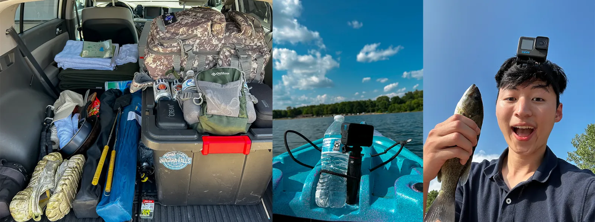
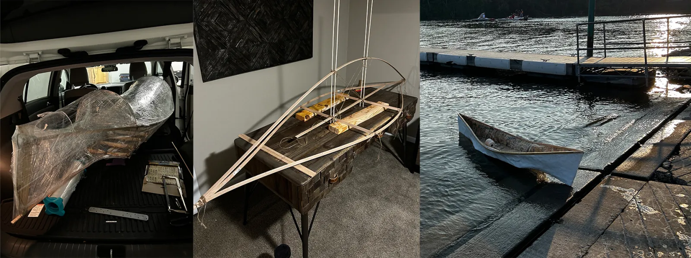
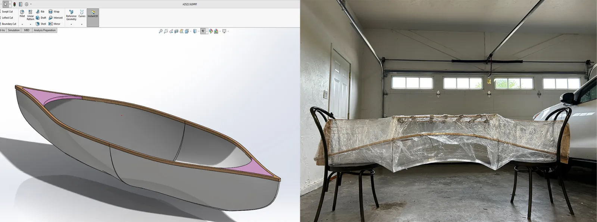
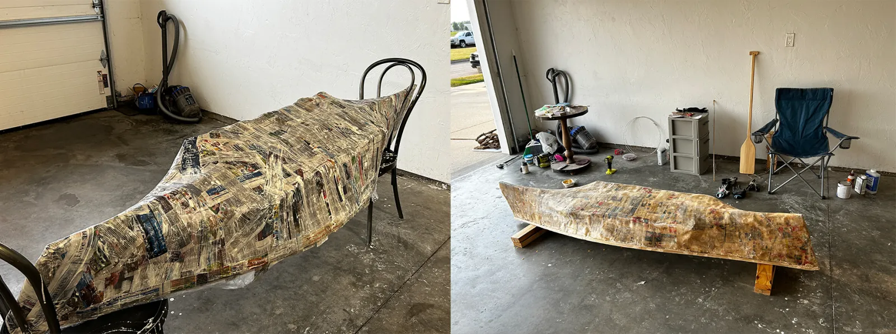
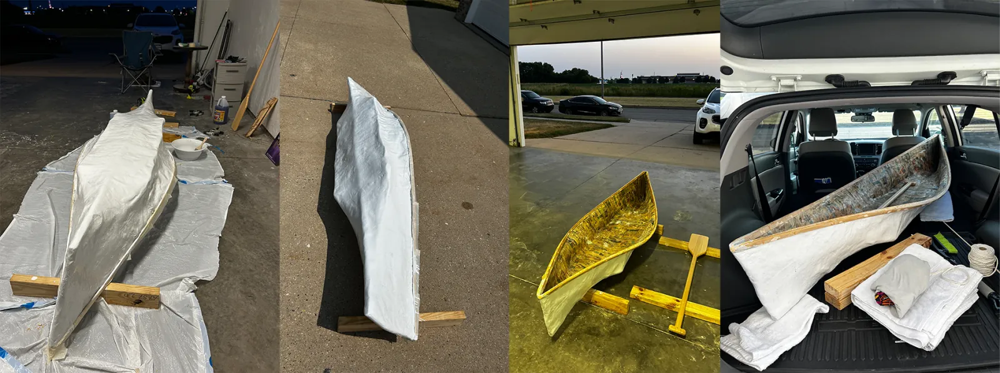

Overview
I love camping. I love Canoeing. And I love Fishing. I also had prior experience building a canoe from recycled materials (AZSZ 1.0). So why not build another, to test my creativity, engineering skills, and experiment with new materials?


Design constraints
With summer coming up, it'd be great to have my own custom built canoe that:
1. Fits in my car: < 8ft [size constraint].
2. Lightweight: < 10kg - light enough to lift and float [weight constraint].
3. Looks cool: has a RAM [design decision]
Modelling and materials
With my expertise in SolidWorks, creating a 3D model from hand drawn sketches wasn't a problem. However, finding the right frame materials was challenging, leading to design compromises (This will later teach me a valuable lesson about material selection and sticking to the original design.).


Mache and fiberglass
I did 4 layers of newspaper mache and 2 layers of fiberglass. Strips of wood from HomeDepot as gunwales.
Finishing
After hours of fiberglassing, sanding, fiberglassing, sanding, painting, sanding, painting, sanding, sanding, and sanding. It was finally ready.

Initial float test
Initial float test at Traxler Park, Janesville, WI. Failed due to strong waves. Compromise in design led to reduction in height of the canoe. After boarding, canoe is barely (<5 in) above water level.
Sail test
Sail test at Kiwanis Pond, Janesville, WI. Success! However, needs extreme caution and high chance of getting wet.
Similar work

Recycled Arizona "Can"oe
When Covid hit and classes moved online, my friends and I started drinking Arizona (a lot of it). We collected around 80 cans in a matter of a few weeks.

3D Print Projects
A book case, a JBL speaker cover, a desktop study mate and more, all 3D printed.
Hydrone
Underwater drone project built during CMU's Build 18 competition for recreational, environmental, and safety applications.